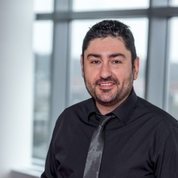

Cybersecurity Expert/Managing Director (exec)/AI/Founder and Trainer
Global Managing Director at Kroll, founder of Crimosn7, a threat research lab and of Peach Studio a creative AI factory. Vito is a cybersecurity and innovation expert, trainer and author of OSS tools, specialised in threat informed defense, offensive security and security operations. Across 25 years and different roles, he learned to bridge the two world of technical expertise and executive management.
Vito led offensive, defensive and incident response consulting teams, built and worked to resiliance programs, he is an adversary simulations expert. The technical background was key to lead teams, actively work on detection engineering and to finally author security tools and AI trainings.
He is best placed in a strategic function, where vision drives resilience programs that can handle velocity and complexity of modern cyber, and worked for Finance, Industrial/TSOs, corporate clients. Vito shines in translating and simplifying the message to executive teams and he is recognised as speaker for Cyber and AI Security events.
Own Security and Resilience services for BeNeLux. Handle go-to-market, client relationships, and partner development. Also working as the firm's AI Security specialist, advising on agentic systems.
Founded an AI prototyping and creative lab that builds products with AI at the core: autonomous agents, edge-AI security tools, and developer tooling. The flagship is Foil, an on-device AI code security scanner for Apple Silicon.
Started a Threat Research Lab and adversary simulation company with his former Kroll's team. Full P&L, commercial strategy, HR hiring, business development/GTM and marketing, partnerships management. Brought to market a continuous Purple Team service (Purple Rain) and a threat hunting platform (7hunter).
Ran proactive cybersecurity services for EMEA. Global responsible for Red Team strategy, service design and delivery. Cyber strategy expert. Country Manager for Belgium, set up the Brussels office, hired the team. Split time between Brussels and London HQ.
As Director, Vito led offensive security and incident response for PwC Belgium and Europe. Built cross-border teams, developed new services, served as EMEA subject matter expert for OT security. Worked with central banks on TIBER-BE and NL frameworks.
Technical foundation. Ethical hacker in IBM's X-Force RED, grew into team leadership. Mix of hands-on work and client management.
Founded MEDIALAB (consulting, 1999-2005). Network/Wireless specialist at 2Bite. Researcher at Telecom Italia.